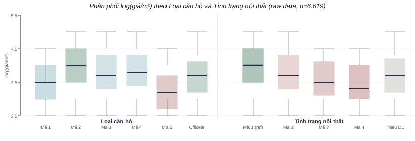
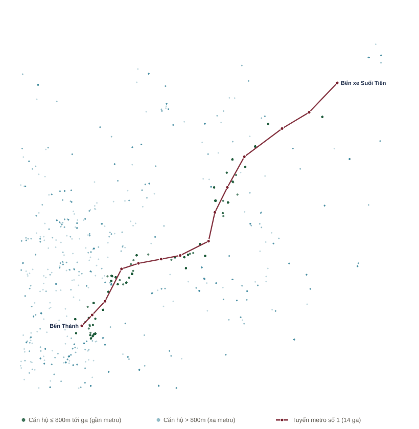
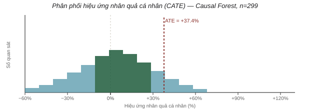
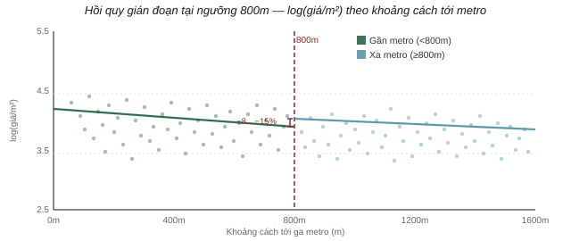
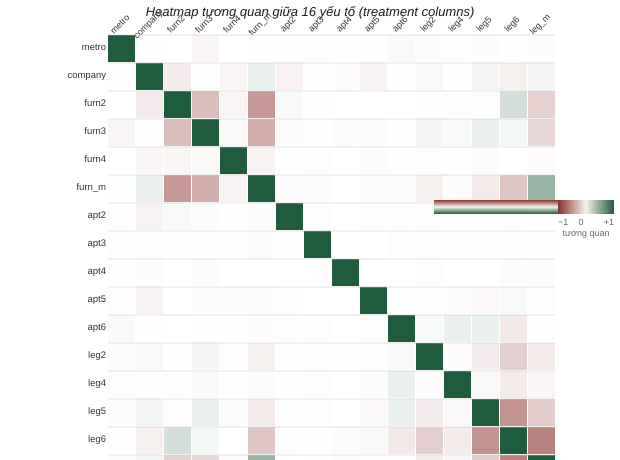

Phân tích yếu tố nhân quả tác động đến giá căn hộ
tại Thành phố Hồ Chí Minh
Ước lượng tác động nhân quả của các đặc điểm tin rao lên giá bán trên mỗi mét vuông bằng phương pháp Double Machine Learning
§Tóm tắt
Giá bán căn hộ tại Thành phố Hồ Chí Minh chịu ảnh hưởng đồng thời của nhiều đặc điểm quan sát được trong một tin rao - vị trí, người bán, tình trạng nội thất, loại hình căn hộ và loại giấy tờ pháp lý - vốn thường tương quan chặt chẽ với nhau (ví dụ căn hộ gần trung tâm thường đồng thời có nội thất tốt hơn và do môi giới đăng). Điều này khiến các phương pháp hồi quy thông thường dễ gán nhầm hiệu ứng của một yếu tố cho yếu tố khác, dẫn đến kết luận sai lệch về động lực thực sự của giá. Báo cáo này nhằm trả lời câu hỏi: trong số các đặc điểm nói trên, yếu tố nào thực sự có tác động nhân quả - chứ không chỉ tương quan bề mặt - lên giá bán trên mỗi mét vuông, sau khi đã kiểm soát lẫn nhau và kiểm soát các đặc điểm vật lý cơ bản (diện tích, số phòng, số toilet, tầng, khu vực). Để đạt mục tiêu này, nghiên cứu sử dụng dữ liệu tin rao căn hộ thu thập từ nền tảng Chợ Tốt, kết hợp cách tiếp cận cho phép tách bạch hiệu ứng riêng phần của từng yếu tố và kiểm chứng chéo kết quả qua nhiều góc nhìn khác nhau nhằm đảm bảo độ tin cậy của các ước lượng.
IGiới thiệu
A. Bối cảnh và động cơ nghiên cứu
Giá bán căn hộ tại Thành phố Hồ Chí Minh chịu ảnh hưởng đồng thời của nhiều đặc điểm quan sát được trong một tin rao: vị trí địa lý, chủ thể đăng tin (cá nhân hay công ty/môi giới), tình trạng nội thất, loại hình căn hộ, và loại giấy tờ pháp lý. Việc xác định yếu tố nào thực sự quyết định giá, thay vì chỉ đi kèm với giá cao, có ý nghĩa quan trọng đối với người mua, người bán và các đơn vị định giá.
B. Vấn đề: tương quan không đồng nghĩa với nhân quả
Một hồi quy thông thường có thể cho thấy tin đăng bởi công ty có giá cao hơn, hoặc căn hộ có nội thất đầy đủ thì đắt hơn. Tuy nhiên, các đặc điểm này thường đan xen: một căn hộ gần trung tâm thường đồng thời có nội thất tốt, do môi giới đăng, và tọa lạc ở khu vực có mặt bằng giá cao. Nếu không tách biệt các nguồn ảnh hưởng này, ta dễ gán nhầm cho một yếu tố phần tác động vốn thuộc về yếu tố khác. Câu hỏi đặt ra đòi hỏi ước lượng hiệu ứng riêng phần của từng đặc điểm, trong khi giữ cố định các đặc điểm còn lại - đây là bài toán suy luận nhân quả, không phải bài toán dự báo.
C. Câu hỏi nghiên cứu
Năm đặc điểm được chọn làm đối tượng phân tích xuất phát từ hai lý do. Thứ nhất, đây là các trường thông tin được chuẩn hóa và ghi nhận đầy đủ trong dữ liệu tin rao của Chợ Tốt (không phải trường mô tả tự do), nên có thể mã hóa và đo lường nhất quán trên toàn bộ mẫu. Thứ hai, mỗi yếu tố đại diện cho một kênh tác động khác biệt và được thị trường bất động sản thừa nhận rộng rãi khi định giá một căn hộ:
- Vị trí - khoảng cách từ căn hộ đến ga metro gần nhất, phản ánh khả năng tiếp cận hạ tầng giao thông;
- Người bán - tin do cá nhân hay do công ty/môi giới đăng, phản ánh kênh giao dịch và có thể liên quan đến hành vi định giá (môi giới có xu hướng định giá theo thị trường hoặc "hét giá" cao hơn);
- Tình trạng nội thất - mức độ hoàn thiện khi bàn giao (từ cao cấp, đầy đủ đến thô, chưa hoàn thiện), phản ánh chi phí hoàn thiện còn lại mà người mua phải gánh;
- Loại hình căn hộ - chung cư, căn hộ dịch vụ/mini, duplex, penthouse, tập thể/cư xá, hay officetel, phản ánh phân khúc sản phẩm;
- Loại giấy tờ pháp lý - tình trạng sổ hồng/hợp đồng, phản ánh mức độ rủi ro pháp lý của giao dịch.
Việc đưa cả năm yếu tố này vào cùng một khung phân tích, thay vì xét riêng lẻ, xuất phát từ thực tế rằng chúng thường tương quan lẫn nhau trong dữ liệu thực tế (ví dụ căn hộ pháp lý đầy đủ thường cũng có nội thất tốt hơn), nên cần được kiểm soát đồng thời để tách bạch đóng góp riêng của từng yếu tố.
D. Cách tiếp cận
Nghiên cứu coi năm đặc điểm trên là các tác nhân ngang hàng, đưa vào phân tích đồng thời để mỗi ước lượng phản ánh tác động riêng của yếu tố đó sau khi đã khử ảnh hưởng của các yếu tố còn lại và của đặc điểm vật lý. Cụ thể, quy trình thực nghiệm được triển khai theo ba bước:
- Ước lượng đồng thời năm yếu tố bằng phương pháp Double Machine Learning (DML), cho phép tách phần biến thiên của giá và của từng yếu tố không giải thích được bởi đặc điểm vật lý và khu vực, trước khi ước lượng hiệu ứng nhân quả trên phần dư còn lại;
- Kiểm chứng độ vững của kết quả bằng cách chạy song song hai biến thể mô hình có giả định khác nhau (LinearDML và SparseLinearDML), nhằm loại trừ khả năng kết quả bị bóp méo bởi hiện tượng đa cộng tuyến giữa các yếu tố;
- Khảo sát chuyên sâu riêng cho yếu tố vị trí - yếu tố được kỳ vọng có tác động mạnh nhất - bằng hai phương pháp độc lập với giả định khác hẳn nhau: Causal Forest (dựa trên giả định không còn nhiễu chưa kiểm soát) và hồi quy gián đoạn RDD (dựa trên tính liên tục cục bộ quanh ngưỡng khoảng cách), nhằm đối chiếu chéo kết luận từ hai góc nhìn khác nhau.
Chi tiết công thức và giả định của từng phương pháp được trình bày ở Mục III.
IIDữ liệu
Dữ liệu gốc là tập tin rao bán căn hộ tại Thành phố Hồ Chí Minh, được thu thập từ nền tảng rao vặt Chợ
Tốt và công bố dưới dạng tệp JSON (chotot_raw.json) trên Kaggle:
Apartment Dataset – Chotot 0726.
Mỗi bản ghi trong tệp dữ liệu thô tương ứng với một tin rao, gồm các trường thông tin được liệt kê trong
Bảng I.
Bảng I. Các trường thông tin trong dữ liệu gốc.
| Nhóm | Trường | Mô tả |
|---|---|---|
| Định danh | list_id | Mã tin rao, dùng để phát hiện và loại bản ghi trùng lặp |
| Vị trí | latitude, longitude | Tọa độ căn hộ, dùng để tính khoảng cách tới ga metro gần nhất |
| Giá | price_million_per_m2 | Giá rao bán trên mỗi mét vuông (triệu đồng) |
| Đặc điểm vật lý | size | Diện tích căn hộ (m²) |
| rooms | Số phòng ngủ | |
| toilets | Số toilet | |
| floornumber | Số tầng | |
| Đặc điểm định tính | furnishing_sell | Tình trạng nội thất khi bàn giao |
| apartment_type | Loại hình căn hộ | |
| property_legal_document | Loại giấy tờ pháp lý | |
| company_ad | Tin đăng bởi công ty/môi giới hay cá nhân | |
| Khu vực | area_name | Quận/khu vực nơi căn hộ tọa lạc |
Chú thích mã danh mục (đối chiếu định nghĩa trường của Chợ Tốt qua API tin rao): Nội thất - 1 Nội thất cao cấp · 2 Nội thất đầy đủ · 3 Hoàn thiện cơ bản · 4 Bàn giao thô. Pháp lý - 6 Sổ hồng riêng · 5 Hợp đồng mua bán · 4 Hợp đồng đặt cọc · 2 Đang chờ sổ. Loại căn hộ - 1 Chung cư · 2 Căn hộ dịch vụ/mini · 3 Duplex · 4 Penthouse · 5 Tập thể/cư xá · 6 Officetel. Do phân bố lệch mạnh về một nhóm, các mã lẻ ít giá trị phân tích; hai biến nội thất và pháp lý về bản chất nên đọc theo nhị phân: có nội thất (mã 1–3) so với bàn giao thô (mã 4), và đã có sổ (Sổ hồng riêng) so với chưa có sổ (các loại hợp đồng).
Dữ liệu thô được xử lý và tổng hợp qua bốn bước tuần tự trước khi đưa vào mô hình:
- Loại bản ghi trùng lặp - các bản ghi có cùng
list_idbị loại bỏ, đưa mẫu từ 6.621 xuống còn 6.619 tin rao. - Tính khoảng cách đến metro - với mỗi căn hộ có tọa độ hợp lệ, khoảng cách Haversine đến từng
ga trong số 14 ga thuộc tuyến metro số 1 (Bến Thành – Suối Tiên) được tính, lấy khoảng cách nhỏ nhất để
suy ra biến nhị phân
near_metro_800m; bản ghi thiếu tọa độ được gán giá trị khuyết thay vì suy diễn. - Dựng khung dữ liệu mô hình - biến kết quả
log(giá/m²)được tính từprice_million_per_m2; các bản ghi thiếu bất kỳ trường cần thiết nào (biến kết quả, biến tác nhân, biến kiểm soát) bị loại, đưa mẫu dùng cho mô hình đa yếu tố (Mục IV) còn 6.500 quan sát; các biến định tính được mã hóa one-hot (bỏ nhóm tham chiếu đầu tiên). - Giới hạn phạm vi khảo sát vị trí - riêng cho phần phân tích chuyên sâu về yếu tố vị trí (Mục IV), mẫu được giới hạn trong bán kính 3km quanh tuyến metro nhằm đảm bảo so sánh công bằng giữa nhóm gần và nhóm xa, còn lại 1.470 tin; sau khi loại tiếp các bản ghi thiếu dữ liệu, cỡ mẫu ước lượng cuối cùng cho Causal Forest và RDD là 299 quan sát (67 căn nằm trong 800m, 232 căn nằm ngoài).
IIIPhương pháp
Để trả lời câu hỏi nghiên cứu, nghiên cứu áp dụng khung suy luận nhân quả dựa trên Double Machine Learning (DML) - phương pháp kết hợp mô hình học máy (dùng để khử nhiễu phi tuyến từ các biến kiểm soát) với một bước ước lượng nhân quả ở giai đoạn cuối. Ý tưởng cốt lõi gồm hai bước:
Bước 1 (orthogonalization) dùng mô hình học máy (ở đây là LightGBM) để dự đoán riêng giá và từng yếu tố từ các biến kiểm soát W (diện tích, số phòng, toilet, tầng, khu vực), rồi lấy phần dư. Ví dụ, nếu hai căn hộ cùng diện tích, cùng khu vực nhưng một căn gần metro, phần dư T̃metro sẽ tách biệt đúng phần "gần metro" không giải thích được bởi các đặc điểm còn lại. Bước 2 hồi quy phần dư của giá lên phần dư của các yếu tố:
Hệ số θ̂j thu được xấp xỉ tác động nhân quả riêng của yếu tố j lên
log(giá/m²); quy đổi sang phần trăm bằng công thức (eθ̂j − 1) × 100.
Bốn mô hình cụ thể được triển khai theo nguyên lý này, chia thành hai nhóm theo mục đích.
A. LinearDML
Đây là mô hình trục chính, ước lượng đồng thời hiệu ứng riêng phần của cả năm yếu tố (vị trí, người
bán, nội thất, loại căn hộ, pháp lý) lên giá/m². Cả năm yếu tố được đưa vào cùng một vector tác nhân
T (nhiều cột 0/1), residualization thực hiện bằng LightGBM với 5-fold cross-fitting, sau đó bước
cuối dùng hồi quy tuyến tính (OLS) trên phần dư. Ví dụ, hệ số của cột near_metro_800m cho
biết: giữa hai căn hộ giống hệt nhau về diện tích, số phòng, khu vực và các yếu tố khác, căn nào nằm trong
800m tới ga metro có giá/m² chênh lệch bao nhiêu phần trăm so với căn còn lại.
B. SparseLinearDML
Mô hình đối chứng, chạy song song với LinearDML trên cùng dữ liệu và cùng cấu hình residualization, chỉ khác ở bước cuối: thay vì OLS, sử dụng debiased Lasso (có regularization). Lý do áp dụng: khi nhiều yếu tố tương quan với nhau (ví dụ một căn vừa mới, vừa có nội thất tốt, vừa gần metro), OLS có thể cho hệ số kém ổn định do đa cộng tuyến. Debiased Lasso xử lý vấn đề này trong khi vẫn giữ được suy luận thống kê hợp lệ (p-value, khoảng tin cậy) - điều mà Lasso thông thường không đảm bảo. Nếu hệ số của LinearDML và SparseLinearDML gần như trùng khớp cho từng yếu tố, kết quả được xem là vững, không phải hiện tượng giả do đa cộng tuyến.
C. Causal Forest
Do yếu tố vị trí được kỳ vọng có tác động mạnh nhất, nghiên cứu dành một khảo sát chuyên sâu riêng để kiểm chứng bằng phương pháp có giả định khác. Causal Forest ước lượng hiệu ứng nhân quả trung bình (ATE) của việc ở gần metro, sử dụng rừng cây quyết định "honest" (tách dữ liệu xây cây và dữ liệu ước lượng hiệu ứng) với 5-fold cross-fitting, cho phép hiệu ứng thay đổi linh hoạt theo đặc điểm từng căn hộ thay vì giả định một hệ số cố định như LinearDML. Ví dụ, phương pháp này có thể phát hiện việc ở gần metro tác động mạnh hơn ở nhóm căn hộ diện tích nhỏ so với nhóm căn hộ lớn - điều mà một hệ số tuyến tính duy nhất không thể hiện được. Phương pháp dựa trên giả định không còn yếu tố nhiễu quan trọng nào chưa được kiểm soát (unconfoundedness).
D. Hồi quy gián đoạn (RDD)
Phương pháp kiểm chứng độc lập thứ hai cho yếu tố vị trí, tận dụng đặc điểm biến
near_metro_800m là một hàm bậc thang xác định (deterministic) của khoảng cách tới metro tại
ngưỡng 800m - tạo ra một tình huống "gián đoạn sắc nét" (sharp RDD) tự nhiên. Phương pháp hồi quy
tuyến tính cục bộ hai bên ngưỡng, có tương tác giữa nhóm và khoảng cách:
trong đó d là khoảng cách đã canh giữa theo ngưỡng 800m. Hệ số β là "hiệu ứng cục bộ" tại ngưỡng. Ví dụ, so sánh một căn hộ cách metro 750m với một căn cách 850m - hai căn rất gần nhau về vị trí nhưng khác nhóm xử lý - sẽ cho ước lượng ít bị nhiễu bởi khác biệt vùng miền. Khác với Causal Forest (dùng toàn bộ mẫu và giả định đã kiểm soát đủ nhiễu), RDD chỉ dựa vào giả định tính liên tục cục bộ quanh ngưỡng, không cần giả định về việc đã kiểm soát đủ nhiễu - do đó đóng vai trò đối chiếu chéo từ một góc nhìn giả định hoàn toàn khác. Để kiểm tra độ ổn định, ước lượng được lặp lại với nhiều độ rộng dải (bandwidth) khác nhau quanh ngưỡng.
Việc đối chiếu kết quả giữa các mô hình trong từng nhóm (A với B, C với D) đóng vai trò kiểm tra độ vững: nếu các phương pháp có giả định khác nhau cùng đưa ra kết luận tương tự, độ tin cậy của phát hiện được củng cố. Chi tiết cấu hình siêu tham số, kết quả số liệu và bảng biểu được trình bày trong Mục IV.
IVThực nghiệm
A. TN1: Tác động của các yếu tố lên giá nhà
Mô hình sử dụng: LinearDML (mô hình chính) và SparseLinearDML (mô hình đối chiếu, kiểm tra độ vững). Mẫu: 6.500 quan sát.

Bảng II. Kết quả ước lượng hiệu ứng nhân quả (Mô hình A – LinearDML).
| Nhóm | Yếu tố (so với nhóm tham chiếu) | Hiệu ứng (%) | p-value | Kết luận |
|---|---|---|---|---|
| Vị trí | Gần metro ≤ 800m | +27,3 | <0,001 | Tăng*** |
| Người bán | Công ty/môi giới | −0,1 | 0,960 | Không |
| Nội thất | Có nội thất (mã 2–4, so với mã 1 – cao cấp) | −5,4 đến −13,9 | <0,01 (cả 4 mã) | Giảm - nhất quán, giảm dần theo mức hoàn thiện |
| Loại căn hộ | Căn hộ dịch vụ/mini (mã 2) | +29,4 | 0,017 | Tăng* |
| Duplex (mã 3) | +14,1 | 0,055 | Không | |
| Penthouse (mã 4) | +20,6 | 0,095 | Không | |
| Tập thể/cư xá (mã 5) | −16,7 | 0,002 | Giảm** | |
| Officetel (mã 6) | +13,3 | 0,002 | Tăng** | |
| Pháp lý | Đang chờ sổ (mã 2) | −18,1 | 0,009 | Giảm** - duy nhất có ý nghĩa |
| Các mã còn lại (đặt cọc, mua bán, sổ hồng, thiếu dữ liệu) | −7,7 đến −11,4 | 0,09–0,40 (n.s.) | Không |
Ghi chú: *** p<0,001; ** p<0,01; * p<0,05; n.s. = không có ý nghĩa thống kê.
Kiểm tra độ vững. Hai mô hình dùng cùng dữ liệu và bước khử nhiễu; bảng dưới đặt kết quả cạnh nhau để kiểm tra độ nhạy với mô hình cuối.
| Nhóm yếu tố | LinearDML | SparseLinearDML | Đối chiếu |
|---|---|---|---|
| Vị trí gần metro | +27,3% | +27,4% | Cùng chiều, cùng ý nghĩa |
| Người bán | −0,1% (n.s.) | −0,1% (n.s.) | Cùng kết luận |
| Nội thất | −5,4% đến −13,9% | −5,4% đến −14,0% | Cùng chiều, cùng ý nghĩa |
| Loại căn hộ | −16,7% đến +29,4% | −17,0% đến +29,3% | Cùng chiều; Duplex sát ngưỡng p: 0,055 ↔ 0,045 |
| Pháp lý | −7,7% đến −18,1% | −7,5% đến −17,9% | Chỉ “đang chờ sổ” có ý nghĩa ở cả hai |
- Vị trí: gần metro làm giá tăng 27,3% (p<0,001) — tác động mạnh nhất.
- Nội thất: mức hoàn thiện thấp hơn làm giá giảm 5,4%–13,9%; kết quả nhất quán.
- Loại căn hộ: dịch vụ/mini và officetel tăng giá; tập thể/cư xá giảm giá; hai loại còn lại chưa đủ bằng chứng.
- Pháp lý: chỉ nhóm “đang chờ sổ” giảm giá có ý nghĩa; các nhóm khác chưa đủ bằng chứng.
- Người bán: không tác động đến giá/m² (−0,1%; p=0,960).
B. TN2: Ảnh hưởng của vị trí lên giá căn hộ
Mô hình sử dụng: Causal Forest và Hồi quy gián đoạn (RDD) - hai phương pháp độc lập, giả định khác nhau, để kiểm chứng chuyên sâu riêng cho yếu tố vị trí. Mẫu Causal Forest: 299 quan sát trong phạm vi 3km quanh tuyến metro (67 gần / 232 xa). Mẫu RDD: thay đổi từ 400 đến 956 quan sát tùy bandwidth quanh ngưỡng 800m, như trình bày ở Bảng IV.

Bảng III. Kết quả Causal Forest.
| Chỉ số | Giá trị |
|---|---|
| ATE (thang log) | 0,317 |
| Hiệu ứng quy đổi | +37,4% |
| KTC 95% | [+5,6%; +78,6%] |

Bảng IV. Kết quả RDD theo các độ rộng dải (bandwidth) quanh ngưỡng 800m.
| Bandwidth (m) | n (gần/xa) | Hiệu ứng cục bộ (%) | KTC 95% | p-value |
|---|---|---|---|---|
| 300 | 400 (258/142) | −8,4 | [−31,0; +13,4] | 0,438n.s. |
| 500 | 584 (317/267) | −13,9 | [−31,2; +1,2] | 0,069n.s. |
| 800 | 689 (359/330) | −12,3 | [−26,9; +0,8] | 0,065n.s. |
| 1200 | 956 (359/597) | −15,3 | [−29,3; −3,8] | 0,011* |

- Kết quả trái chiều: Causal Forest +37,4%; RDD từ −8% đến −15%.
- Nguyên nhân: Causal Forest kiểm soát khu vực; RDD quanh ngưỡng còn chịu chênh lệch địa bàn.
- Độ vững: chỉ bandwidth 1200m của RDD có ý nghĩa; ba bandwidth còn lại không có ý nghĩa.
- Kết luận: ưu tiên chiều tác động dương vì Causal Forest cùng chiều với TN1; RDD là cảnh báo độ nhạy.
C. Trả lời câu hỏi nghiên cứu từ kết quả thực nghiệm
Sau kiểm soát, vị trí, nội thất và một số loại căn hộ làm giá/m² thay đổi; người bán không tác động, còn pháp lý chỉ có bằng chứng hạn chế.
VKết luận
Nghiên cứu phân tích hơn 6.500 tin rao căn hộ tại TP.HCM bằng phương pháp Double Machine Learning, và kiểm tra lại kết quả bằng nhiều cách tính khác nhau để chắc chắn không có sai sót. Kết quả cho thấy: không phải cứ yếu tố nào đi kèm với giá cao là yếu tố đó thực sự làm giá tăng - có những yếu tố chỉ "trùng hợp" đi cùng giá cao chứ không phải nguyên nhân thật sự.
Sau khi tách riêng từng yếu tố và loại bỏ ảnh hưởng của diện tích, số phòng, khu vực…, mức độ tác động thật sự của 5 yếu tố được xếp hạng như sau:
- Vị trí (gần metro) - tác động mạnh nhất và chắc chắn nhất: căn hộ gần metro có giá cao hơn khoảng 27–37%, và cả hai cách tính khác nhau đều cho cùng một chiều kết quả. Tuy nhiên mức hưởng lợi này không giống nhau ở mọi căn hộ - phần lớn tăng khoảng 25–45%, nhưng một số căn được hưởng lợi nhiều hơn hẳn, có căn lên tới gần 74%.
- Loại căn hộ - có tác động, nhưng khác nhau tùy loại: có loại tăng giá tới 29%, có loại giảm tới 17%.
- Tình trạng nội thất - có tác động rõ ràng và đều đặn: nội thất càng sơ sài, giá càng thấp (giảm khoảng 5–14% so với nội thất cao cấp).
- Giấy tờ pháp lý - hầu như không có tác động thật: chỉ có 1 trường hợp (đang chờ sổ) là thực sự làm giảm giá, còn lại đều không đủ bằng chứng để kết luận có ảnh hưởng.
- Người bán - không có tác động: tin đăng bởi công ty/môi giới hay cá nhân không làm giá thay đổi.
Trả lời câu hỏi nghiên cứu: ba yếu tố thực sự làm giá thay đổi là vị trí, loại căn hộ, và tình trạng nội thất. Còn người bán không ảnh hưởng gì, và giấy tờ pháp lý phần lớn chỉ là trùng hợp chứ không phải nguyên nhân - khi đã loại trừ các yếu tố khác thì gần như không còn ảnh hưởng.
Một số điều cần lưu ý khi đọc kết quả
- Kết quả chỉ đúng nếu không còn yếu tố quan trọng nào khác chưa được tính đến (ví dụ: chất lượng xây dựng, uy tín chủ đầu tư, hướng nhà - những thứ dữ liệu này chưa có).
- Vì một số nhóm nhỏ (như từng loại giấy tờ, từng mức nội thất) có rất ít mẫu, nên đọc theo hướng đơn giản "có/không" sẽ đáng tin hơn là tách quá chi tiết từng loại nhỏ.
- Hai cách tính khác nhau cho yếu tố vị trí (Causal Forest và RDD) ra kết quả trái chiều nhau - điều này cho thấy kết quả về vị trí khá nhạy cảm với cách đo, cần thận trọng khi diễn giải con số chính xác (dù chiều hướng chung là "gần metro thì đắt hơn" vẫn khá rõ).
- Dữ liệu là giá rao bán, chưa chắc đúng với giá giao dịch thực tế cuối cùng - có thể có chênh lệch do thương lượng.
- Riêng phần phân tích chuyên sâu về vị trí chỉ dùng dữ liệu trong phạm vi 3km quanh tuyến metro (299 căn), nên kết luận của phần này chỉ đúng cho khu vực gần metro, chưa chắc đúng cho toàn thành phố.
§Phụ lục
A. Thông số ước lượng đầy đủ
Bảng V liệt kê đầy đủ hệ số (thang log), hiệu ứng quy đổi (%), khoảng tin cậy 95% và p-value cho từng mã danh mục theo cả hai mô hình - LinearDML (A) và SparseLinearDML (B). Đây là bản chi tiết của Bảng II ở Mục IV, dùng để đối chiếu độ vững giữa hai mô hình.
Bảng V. Thông số ước lượng đầy đủ theo từng mã - Mô hình A (LinearDML) và B (SparseLinearDML). Hệ số ở thang log; khoảng tin cậy và p-value của Mô hình A.
| Nhóm | Chi tiết | Hệ số A | HƯ. A (%) | KTC 95% (A) | p (A) | HƯ. B (%) | p (B) | Kết luận |
|---|---|---|---|---|---|---|---|---|
| Vị trí | Gần metro ≤ 800m | +0.241 | +27.3 | [+20.0; +35.0] | 0.000*** | +27.4 | 0.000*** | Tăng ▲ |
| Người bán | Là công ty / môi giới | -0.001 | -0.1 | [-2.4; +2.3] | 0.960n.s. | -0.1 | 0.947n.s. | Không - |
| Nội thất | Mã 2 | -0.056 | -5.4 | [-8.1; -2.8] | 0.000*** | -5.4 | 0.000*** | Giảm ▼ |
| Mã 3 | -0.092 | -8.8 | [-11.7; -5.9] | 0.000*** | -8.9 | 0.000*** | Giảm ▼ | |
| Mã 4 | -0.150 | -13.9 | [-21.9; -5.3] | 0.002** | -14.0 | 0.004** | Giảm ▼ | |
| Thiếu dữ liệu | -0.087 | -8.3 | [-11.0; -5.6] | 0.000*** | -8.3 | 0.000*** | Giảm ▼ | |
| Loại căn hộ | Mã 2 | +0.258 | +29.4 | [+4.8; +60.0] | 0.017* | +29.3 | 0.000*** | Tăng ▲ |
| Mã 3 | +0.132 | +14.1 | [-0.3; +30.6] | 0.055n.s. | +14.0 | 0.045* | Không - | |
| Mã 4 | +0.187 | +20.6 | [-3.2; +50.2] | 0.095n.s. | +20.1 | 0.180n.s. | Không - | |
| Mã 5 | -0.183 | -16.7 | [-25.8; -6.7] | 0.002** | -17.0 | 0.001** | Giảm ▼ | |
| Officetel (mã 6) | +0.125 | +13.3 | [+4.8; +22.4] | 0.002** | +13.1 | 0.005** | Tăng ▲ | |
| Pháp lý | Mã 2 | -0.200 | -18.1 | [-29.5; -5.0] | 0.009** | -17.9 | 0.005** | Giảm ▼ |
| Mã 4 | -0.080 | -7.7 | [-23.2; +11.0] | 0.395n.s. | -7.5 | 0.342n.s. | Không - | |
| Mã 5 | -0.112 | -10.6 | [-22.6; +3.3] | 0.128n.s. | -9.8 | 0.101n.s. | Không - | |
| Mã 6 | -0.121 | -11.4 | [-23.0; +2.0] | 0.093n.s. | -10.5 | 0.069n.s. | Không - | |
| Thiếu dữ liệu | -0.092 | -8.8 | [-20.9; +5.1] | 0.204n.s. | -7.9 | 0.182n.s. | Không - |
B. Đa cộng tuyến giữa các yếu tố
Ma trận tương quan giữa 16 cột yếu tố cho thấy hầu hết |r| < 0,3; cặp cao nhất nằm trong nhóm pháp lý (mã 6 và thiếu dữ liệu, r ≈ −0,60) và giữa các nhóm one-hot của cùng một biến - đây là tương quan cơ học của mã hóa one-hot, không gây lo ngại cho suy luận. Việc Mô hình B (Lasso) trùng kết quả Mô hình A xác nhận đa cộng tuyến không bóp méo ước lượng.

C. Phân phối hiệu ứng nhân quả cá nhân (CATE)
Causal Forest cho phép hiệu ứng của "gần metro" thay đổi theo từng căn hộ (CATE) thay vì một hệ số cố
định. Trên 299 quan sát, phân phối CATE (đã quy đổi sang %) được tóm tắt ở Bảng VI; phân phối đầy đủ minh
họa ở Hình 3. Khoảng 63,5% số căn có hiệu ứng nằm trong +25%…+45%, quanh mức trung bình (ATE) +37,3%;
một số ít căn hưởng lợi vượt trội, cao nhất khoảng +74%. Dữ liệu gốc: data/cate_estimates.csv.
Bảng VI. Phân phối hiệu ứng nhân quả cá nhân (CATE) - Causal Forest, n=299.
| Thống kê | Hệ số (thang log) | Quy đổi (%) |
|---|---|---|
| Trung bình (ATE) | 0,317 | +37,3 |
| Tối thiểu | 0,171 | +18,7 |
| Tứ phân vị dưới (P25) | 0,261 | +29,8 |
| Trung vị (P50) | 0,309 | +36,2 |
| Tứ phân vị trên (P75) | 0,373 | +45,1 |
| Tối đa | 0,554 | +74,0 |
D. Tái lập
Toàn bộ pipeline (làm sạch, tính khoảng cách metro theo Haversine, giới hạn phạm vi, DML / Causal
Forest / RDD) nằm trong notebook ptdltmfinalv2.ipynb. Thư viện chính: econml 0.16,
lightgbm, statsmodels.